These examples show the application of ChemAxon's Chemical Terms in various ChemAxon products. First we look at some basic examples showing chemical expressions formulated with input read from a molecule context, which applies to the Evaluator command line tool and chemical expression evaluation and filtering in JChem Cartridge. Next we demonstrate the strength of the chemical terms language in formulating reaction rules, where input is taken from a reaction context. Finally we show how to select search hits by formulating search filters referring to a search context containing the target and query molecules together with the current search hit.
Throughout the examples, use the set of Chemical Terms Reference Tables to look at the function and plugin calculation syntax together with some generic examples.
To run these examples:
PATH environment variable have to be set as
described in the Installation
Guide for Marvin Beans manual.
cd marvin/examples/evaluatorIn Windows:
cd marvin\examples\evaluator
These examples refer to a molecule
context and applies to the Evaluator command
line tool and chemical expression evaluation and filtering in JChem
Cartridge. The working examples below use the
evaluate
tool but the same expressions can be used in JChem
Cartridge - but only
boolean
expressions (evaluated to
true
or
false
) can be used for setting a filtering
condition.
Our input molecules are stored in aroms.smiles and shown below:
| 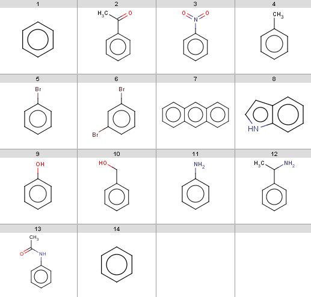 |
This will be the first reactant set in the Friedel-Crafts acylation reaction in the Reaction examples section. Now we start with some simple plugin calculations and proceed towards the exclude rule of the reaction. The first and last molecules are the same (benzene) because we will react benzene with two different acid-halides when processing the Friedel-Crafts acylation.
ringCount() aromaticRingCount() chainAtomCount() smallestRingSize() bondCount() mass()You can find many more in the structure based calculations reference tables. For command line access, run Evaluator by simply typing:
evaluate -e "ringCount()" aroms.smilesand you will get the number of rings for each input molecule:
1 1 1 1 1 1 3 2 1 1 1 1 1 1You can print the results of the others above in a similar way.
avgPol() logp() psa()which compute the average molecular polarizability component considering 3D geometry, the logP and the topological polar surface area, resp. Evaluator example:
evaluate -e "psa()" aroms.smileswill give the following results:
0 17.07 45.82 0 0 0 0 15.79 20.23 20.23 26.02 26.02 29.1 0
charge() pka() energyE() polarizability()Evaluator example:
evaluate -e "energyE()" aroms.smilesIn the result display array elements are separated by ';' characters, invalid values (
NaN not-a-number values, returned when
there is no result returned by the calculations for the atom - in
case of energyE() these are the non-aromatic atoms) are
represented by empty strings: 2.54;2.54;2.54;2.54;2.54;2.54 ;0.5;3.78;1.57;1.05;0.99;1.21;0.99;1.05 1.73;-0.02;1.73;0.7;0.29;0.19;0.3;0.19;0.29 1.84;2.77;2.27;2.54;2.31;2.54;2.27 3.03;2.57;2.51;2.54;2.51;2.54;2.51 3.03;2.57;2.48;2.54;2.48;2.57;3.03;2.48 2.42;2.42;2.23;3.03;2.01;3.03;2.23;2.42;2.42;2.23;3.03;2.01;3.03;2.23 3.88;3.87;3.76;4.31;3.99;3.85;3.43;4.33;3.74 4.2;1.73;1.45;1.56;1.46;1.56;1.45 4.02;2.24;1.77;1.26;1.55;1.3;1.55;1.26 1.55;3.09;1.98;2.55;2.06;2.55;1.98 ;2.29;1.07;2.26;1.8;2.05;1.83;2.05;1.8 ;0.82;4.12;3.1;1.83;1.2;1.42;1.25;1.42;1.2 2.54;2.54;2.54;2.54;2.54;2.54
charge(0) pka(0, 1) energyE(2, 3, 4) polarizability(2)
pka('acidic')
pka(0, 2, 3, 'acidic')
charge('7.4')
charge('7.4', 0)
energyE('6.5', 2, 3)
psa('9.4')
Note, that the pH value is always enclosed in quotes, while atom
indices are specified as integral numbers. For example, typing
evaluate -e "psa('9.4')" aroms.smiles
gives the following: 0 17.07 45.82 0 0 0 0 15.79 20.23 20.23 26.02 27.64 29.1 0which differs from the results received for the input molecule itself for two molecules (compare with the PSA calculation example above).
logd('7.4')
match() tests substructure matching and
returns true or false depending on the
search result.matchCount() counts the search hits and
returns this numerical resultO or an S atom with a single
hydrogen, write:
match('[O,S;H1]')
To count these atoms, write:
matchCount('[O,S;H1]')
Now take a N, aliphatic or aromatic, with at least one
attached hydrogen:
match('[#7][H]')
matchCount('[#7][H]')
Evaluator
example:
evaluate -e "match('[#7][H]')" aroms.smiles
The result is: 0 0 0 0 0 0 0 1 0 0 1 1 1 0Note, that
true is treated and displayed as a numerical 1
and false as a numerical 0. This is useful
when you test a rule like bioavailability
where you require that at least a certain number of the specified
conditions should be satisfied.
You can use the
-x, --extract <format>
option to filter the input and output precisely those molecules
which satisfy the boolean expression:
evaluate -e "match('[#7][H]')" -x smiles aroms.smiles
The result is: c1ccc2[nH]ccc2c1 Nc1ccccc1 CC(N)c1ccccc1 CC(=O)Nc1ccccc1
To test atom-by-atom matches, you should refer to a target atom by its atom index (0-based) and possibly one or more query maps. For example,
match(2, '[#8]C=O')will test whether target atom
2 is part of a carboxylic
group, while match(2, '[#8:1]C=[O:2]', 1)will test whether target atom
2 is a carboxylic OH,
and match(2, '[#8:1]C=[O:2]', 1, 2)will test whether target atom
2 is a carboxylic oxygen.
Note, that the target atom index should be written in front of the
query, while the query atom map(s) should follow the query. However,
in most cases, the target atom is not specified by explicitely
writing an atom index, since we do not know the aotm order in the
target. Instead, the target atom usually comes from another context,
such as ratom(i) or patom(i) from a reaction
context or else a superior function iterates through all atoms and
collects those that satisfy the match condition. The most typical
example for such a function is the filter() function
explained below.
You can also use logical operators to form to include two or more substructure search results:
match('[O,S;H1]') || match('[#7][H]')
will test for matching any of OH, SH or a
nitorgen with at least one attached hydrogen:
evaluate -e "match('[O,S;H1]') || match('[#7][H]')" aroms.smiles
the result is: 0 0 0 0 0 0 0 1 1 1 1 1 1 0while
match('[O,S;H1]') && match('[#7][H]')
will test for matching both an OH or SH and a
nitorgen with at least one attached hydrogen.
Furthermore, you can add the number of search hits to count all the above functional groups:
matchCount('[O,S;H1]') + matchCount('[#7][H]')
boolean subexpression as argument,
iterates through the atoms of the input molecule and evaluates this
inner subexpression for each atom. The result is an atom index array
containing the atom indices satifying the inner subexpression. For
example,
filter("charge() > 0")
returns the indices of atoms with positive partial charge. Test this
with the Evaluator:
evaluate -e "filter('charge() > 0')" aroms.smiles
The result is: 1 3;4;8 1 1 0;1with empty rows meaning no positive partial charge for that molecule. You can check the charge values by simply typing:
evaluate -e "charge()" aroms.smiles
Another typical example for an inner condition is the
match()
function:
filter("match('[#8:1]C=[O:2]', 1, 2)")
will list all carboxylic oxygens in the input molecule, while
filter("match('[#7:1][H]', 1)")
will list all nitrogen atoms with at least one attached hydrogen. To
test this, type:
evaluate -e "filter(\"match('[#7:1][H]', 1)\")" aroms.smiles
Note, that you can nest single and double quotes but if you need more
than two then you should escape the inner quotes identical to the
outer quotes. To escape this problem, you can save your filter in a
file and switch to the -f option: evaluate -e filter.txt aroms.smilesThe result is:
4 0 2 3that is, there are four input molecules containing a nitrogen atom with an attached hydrogen, and all of these contain only one such atom.
As another example, you can list aromatic carbons by:
evaluate -e "filter(\"match('c')\")" aroms.smiles
The resulting atom index arrays are displayed as comma-separated lists:
0;1;2;3;4;5 3;4;5;6;7;8 3;4;5;6;7;8 1;2;3;4;5;6 1;2;3;4;5;6 1;2;3;4;5;7 0;1;2;3;4;5;6;7;8;9;10;11;12;13 0;1;2;3;5;6;7;8 1;2;3;4;5;6 2;3;4;5;6;7 1;2;3;4;5;6 3;4;5;6;7;8 4;5;6;7;8;9 0;1;2;3;4;5
evaluate -e "charge(filter(\"match('c')\"))" aroms.smiles
will return the partial charges on aromatic carbons: -0.06;-0.06;-0.06;-0.06;-0.06;-0.06 -0.02;-0.02;-0.05;-0.04;-0.05;-0.02 0.03;0.03;-0.03;-0.03;-0.03;0.03 -0.06;-0.07;-0.06;-0.07;-0.06;-0.07 -0.02;-0.04;-0.05;-0.06;-0.05;-0.04 -0.02;-0.03;-0.05;-0.03;-0.02;-0.01 -0.06;-0.06;-0.05;-0.04;-0.03;-0.04;-0.05;-0.06;-0.06;-0.05;-0.04;-0.03;-0.04;-0.05 -0.05;-0.05;-0.04;-0.09;-0.11;-0.04;-0.04;-0.04 -0.01;-0.06;-0.06;-0.1;-0.06;-0.06 -0.04;-0.05;-0.06;-0.06;-0.06;-0.05 -0.04;-0.07;-0.07;-0.09;-0.07;-0.07 -0.05;-0.05;-0.06;-0.06;-0.06;-0.05 -0.02;-0.04;-0.05;-0.06;-0.05;-0.04 -0.06;-0.06;-0.06;-0.06;-0.06;-0.06
evaluate -e "sum(charge(filter(\"match('c')\")))" aroms.smiles
the result is: -0.37 -0.2 -0.01 -0.39 -0.26 -0.15 -0.63 -0.47 -0.35 -0.32 -0.41 -0.33 -0.27 -0.37
match("[#15][H]") ||
(max(pka(filter("match('[O,S;H1]')"), "acidic")) > 14.5) ||
(max(pka(filter("match('[#7:1][H]', 1)"), "basic")) > 0)
This condition tests whether the molecule contains a phosphorus with an
attached hydrogen, or the maximum acidic pKa taken
on an OH or SH is greater than 14.5,
or the maximum basic pKa taken on nitrogen atoms
with attached hydrogen is positive.
Saying that that the maximum basic pKa on certain atoms is positive is the same as saying that there should be an atom among these atoms with a positive pKa, but the former is the way to describe this fact in chemical terms. Thus, the above consition is satisfied if any of the following is satisfied:
OH or SH
with acidic pKa greater than 14.5,
or
match("[#15][H]")
is passed then there is no need to evaluate the other two with more
complicated filtering and pKa calculation.
To test this condition on our input molecules, type:
evaluate -e friedel-crafts-exclude.txt aroms.smilesIt turns out, that the following input molecules satisfy this exclude rule, that is, the Friedel-Crafts acylation will not be performed for these molecules:
| 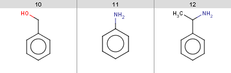 |
(mass() <= 500) && (logP() <= 5) && (donorCount() <= 5) && (acceptorCount() <= 10)Test this by:
evaluate -e lipinski.txt aroms.smilesIt turns out that all of our input molecules satisfy Lipinski's rule.
(mass() <= 450) &&
(logD("7.4") >= -4) && (logD("7.4") <= 4) &&
(ringCount() <= 4) &&
(rotatableBondCount() <= 10) &&
(donorCount() <= 5) &&
(acceptorCount() <= 8)
Test this by: evaluate -e lead-likeness.txt aroms.smilesThere is one molecule that fails to satisfy this rule:
| 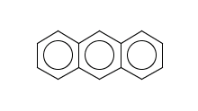 |
The reason is that its logD at
pH=7.4
is too big:
evaluate -e "logD('7.4')" "c1ccc2cc3ccccc3cc2c1"
4.05
(mass() <= 500) + (logP() <= 5) + (donorCount() <= 5) + (acceptorCount() <= 10) + (rotatableBondCount() <= 10) + (PSA() <= 200) + (fusedAromaticRingCount() <= 5) >= 6Note, that summing up the
7 subresults above means to
count how many of them are satisfied. The requirement that this sum
should be at least 6 means that we do not rewuire all
of the subconditions to be satisfy but instead we allow at most one
of them to fail.
Test this by:
evaluate -e bioavailability.txt aroms.smilesIt turns out that all of our input molecules satisfy this bioavailability rule.
(mass() >= 160) && (mass() <= 480) && (atomCount() >= 20) && (atomCount() <= 70) && (logP() >= -0.4) && (logP() <= 5.6) && (refractivity() >= 40) && (refractivity() <= 130)
Test this by:
evaluate -e ghose-filter.txt aroms.smilesIt turns out that only our previous molecule failing lead-likeness passes this Ghose filter.
refmol = "c1ccccc1";
dissimilarity("ChemicalFingerprint", refmol) -
dissimilarity("PharmacophoreFingerprint", refmol) > 0.6
Note, that molecule constants can be defined by a molecule file path or
a SMILES string. Multiple expressions are separated by ';'
characters, whitespace characters can be added freely for
readability, since they are not considered by the evaluation
process.
This condition tests whether the chemical and the pharmacophore dissimilarities between benzene and the input molecule are sufficiently far from each other, that is, the molecules should not be reasonably similar in pharmacophoric features but distant in chemical structure.
Test this by:
evaluate -e scaffold-hopping.txt aroms.smilesIt turns out that none of our input molecules satisfies this rule.
Note, that the default output is a
0-1
list representing
true-false
values for each input molecule. You can use the
-x, --extract <format>
option to output precisely those input molecules that satisfy the
condition. For example:
evaluate -e ghose-filter.txt -x smiles aroms.smileswill give the result:
c1ccc2cc3ccccc3cc2c1
In this section we show two sample reactions:
You can also find these reactions with some sample reactants in the Reactor JSP example.
We demonstrate the use of reaction rules:
reactant(0): the first reactantreactant(1): the second reactantproduct(0): the first productproduct(1): the second productratom(1): the reactant atom matching map 1
in the reaction equationratom(3): the reactant atom matching map 3
in the reaction equationpatom(1): the product atom matching map 1
in the reaction equationpatom(2): the product atom matching map 2
in the reaction equation
You should map your reactions according to ChemAxon's
reaction mapping style to access reactant and product atoms by map
matching. You can also use
Edit/Add/Atom Maps
in MarvinSketch to use automatical mapping, but always check the
result, since this is an experimental feature.
Our first example is Friedel-Crafts acylation:
| 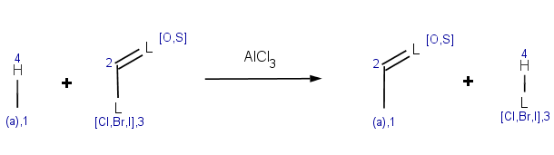 |
The reaction has the following rules:
charge(ratom(1), "aromaticsystem") <= -0.2meaning that the aromatic system should be at least as activated as dihalobenzenes.
-energyE(ratom(1))this is a specific directional rule saying that the electrophilic substitution takes place on the aromatic carbon atom with the lowest localization energy having an attached electrophile in the transition state.
0.02by this setting we change the default tolerance
0.0001 to
accept other aromatic carbons having a similar localization energy
with maximum difference 0.02 from the lowest value.
Results will be sorted by this localization energy in ascending
order, taking lowest first.
match(ratom(2), "[C:1]C=C", 1) ||
match(reactant(0), "[O,S]C=[O,S]") ||
match(reactant(0), "P[H]") ||
(max(pka(reactant(0), filter(reactant(0), "match('[O,S;H]')"), "acidic")) > 14.5) ||
(max(pka(reactant(0), filter(reactant(0), "match('[#7][H]')"), "basic")) > 0)
The first reactant may not contain carboxylic acid group, or its thio
analogue. Exclude acryloyc halides as acylating agent. Exclude PH
compounds, and aromatic compounds containing such nucleophilic groups
wich can be acylated among these conditions (OH, SH compounds with
higher pKa than 14.5, and NH compounds with higher pKb than 0). This
is a more complicated, somewhat heuristical rule. You may want to
have a look at a similar condition in the basic examples section referring to a molecule
context. Note, that now our condition should explicitly refer to the
input molecule as reactant(0), meaning the first
reactant, while in a molecule context the expression implicitly
refers to the input molecule.
We exclude reactant pairs satisfying any of the following
subexpressions (
||
means logical
OR
):
match(ratom(2), "[C:1]C=C", 1)
| 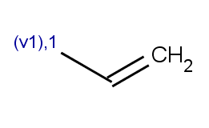 |
match(reactant(0), "P[H]")
OH or SH
with acidic pKa greater than 14.5:
max(pka(reactant(0), filter(reactant(0), "match('[O,S;H]')"), "acidic")) > 14.5
max(pka(reactant(0), filter(reactant(0), "match('[#7][H]')"), "basic")) > 0
Refer to the Chemical Terms Reference Tables for ChemAxon's Chemical Terms function / plugin calculation calculation syntax summary and explanation.
Now it is time to process this reaction on some reactants! We will
process the reaction on
14
reactant pairs.
Our reactant file for the first reactant contains a set of aromatic molecules stored in aroms.smiles:
The set of the second reactants is very simple - we take the same acid-halide for each of the above aromatic molecules:
| 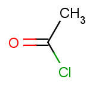 |
Then we will test benzene with another acid-halide as well:
| 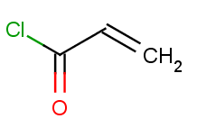 |
The second reactants are stored in acidhalides.smiles with all but one molecule being identical to the first acid-halide above, while the last one being the second one.
Now run Reactor to process the reaction:
react -r Friedel-Crafts_acylation.mrv aroms.smiles acidhalides.smiles -t reaction -o Friedel-Crafts_results.smiles
The result reactions are stored in Friedel-Crafts_results.smiles.
To analyze the results, examine the reactant pairs one-by-one. Observe that the only rule referring the second reactant is the exclude rule stating that the acid-halide carbon should not be the acryloic-halide mapped carbon. It follows that the our first acid-halide is not excluded but our second acid-halide obviously satisfies this condition and therefore the last reactant pair with benzene paired with this second acid-halide is excluded from the result. Now in the analyzation below, we examine the first reactant.
You can check the reactivity and selectivity rules by:
evaluate -e "charge('aromaticsystem')" r1.smiles
evaluate -e "energyE()" r1.smiles
where
r1.smiles
is a first reactant in SMILES form. These commands will list the
evaluation results for each atom, seperated by ';' characters.
evaluate -e "charge('aromaticsystem')" "c1ccccc1"
-0.37;-0.37;-0.37;-0.37;-0.37;-0.37
and does not satisfy the exclude condition, since it does not contain
phosphorus or ionizable atoms (no pKa values),
therefore the reaction is processed and the result is:
| 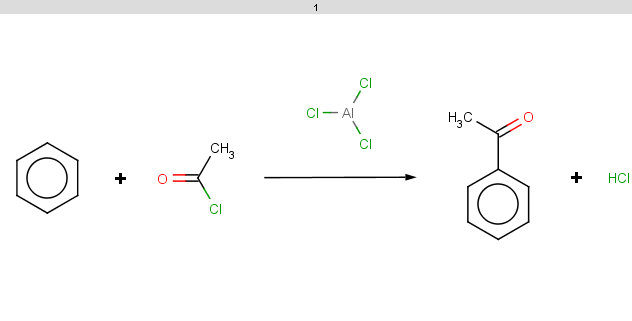 |
Observe that the selectivity rule does not play here since it evaluates to the same value because of molecule symmetry.
evaluate -p 3 -e "charge('aromaticsystem')" "CC(=O)c1ccccc1"
0;0;0;-0.199;-0.199;-0.199;-0.199;-0.199;-0.199 Now we see that the
condition is not satisfied (-0.199 > -0.2).
evaluate -e "charge('aromaticsystem')" "O=N(=O)c1ccccc1"
0;0;0;-0.01;-0.01;-0.01;-0.01;-0.01;-0.01
evaluate -e "charge('aromaticsystem')" "Cc1ccccc1"
0;-0.39;-0.39;-0.39;-0.39;-0.39;-0.39
Toluol is obviously not excluded (for the same reason as benzene,
above), therefore we should evaluate the selectivity rule to
determine the main products:
| 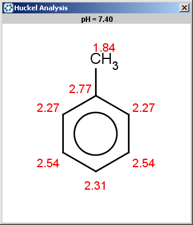 |
Since our selectivity rule says to take the minimal localization
energy (note that the localization energy is multiplied by
-1
to reverse the result order, i.e., to take the minimum instead of
maximum), the ortho position is the best, then the para position is
also accepted because the corresponding value is within tolerance:
2.46 - 2.45 < 0.02
:
| 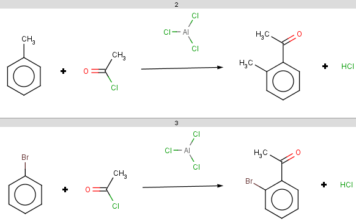 |
| 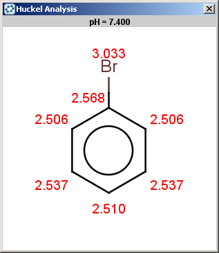 |
The ortho and para positions are accepted, with the ortho position being the main result:
| 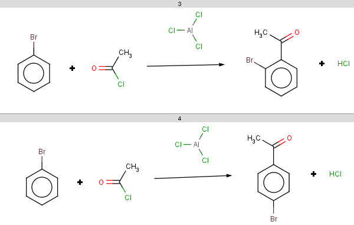 |
evaluate -e "charge('aromaticsystem')" "c1ccc2cc3ccccc3cc2c1"
-0.63;-0.63;-0.63;-0.63;-0.63;-0.63;-0.63;-0.63;-0.63;-0.63;-0.63;-0.63;-0.63;-0.63
Antracen is not excluded for the same reasons as toluol and benzene and
the selectivity rule now determines a single position:
| 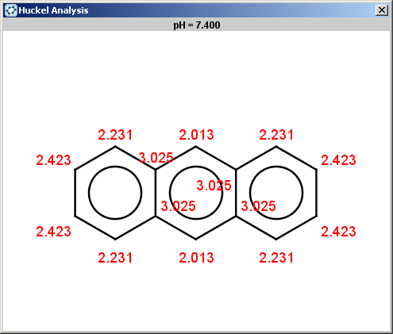 |
The reaction result is shown below:
| 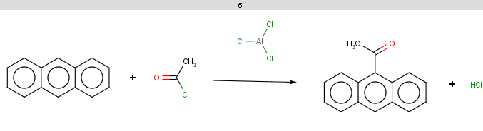 |
evaluate -e "charge('aromaticsystem')" "c1ccc2[nH]ccc2c1"
-0.55;-0.55;-0.55;-0.55;-0.55;-0.55;-0.55;-0.55;-0.55
Indole is not excluded because there is no basic pKa
on its nitrogen atom:
| 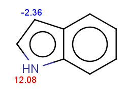 |
The selectivity rule selects a single position:
| 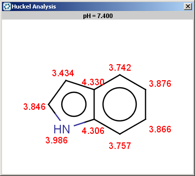 |
The reaction result is shown below:
| 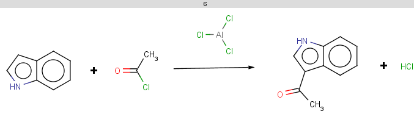 |
evaluate -e "charge('aromaticsystem')" "Oc1ccccc1"
0;-0.35;-0.35;-0.35;-0.35;-0.35;-0.35
Phenol is not excluded, because the acidic pKa on its
OH is not greater than the specified 14.5 limit:
| 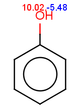 |
The selectivity rule selects the ortho and the para positions:
| 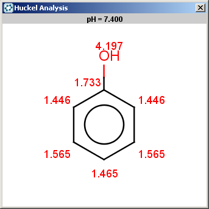 |
The resulting reactions are shown below:
| 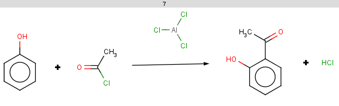 |
14.5
on an OH or SH):
| 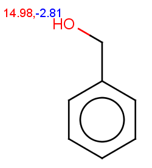 | 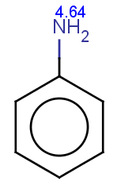 | 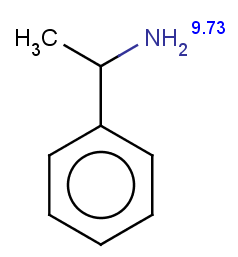 |
| 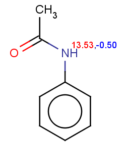 |
Phenylacetamide satisfies the reactivity rule:
evaluate -e "charge('aromaticsystem')" "CC(=O)Nc1ccccc1"
0;0;0;0;-0.27;-0.27;-0.27;-0.27;-0.27;-0.27
The selectivity rule selects a single position (ortho):
| 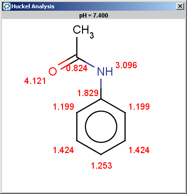 |
The resulting reaction is shown below:
| 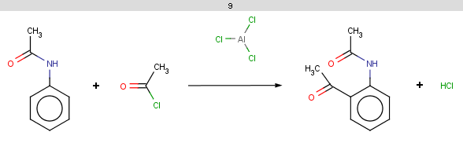 |
You can also run this reaction in the Reactor JSP example. This is in ChemAxon's Reaction Library, you can try to alter or ignore the reaction rules, set different reactants from file or draw your favorite test molecules. You can also save / load the altered reaction. You are more than welcome to post your reaction to the ChemAxon forum.
Our second example is Baeyer-Villiger ketone oxidation:
| 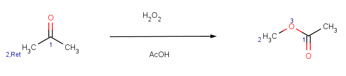 |
The reaction has the following rules:
!match(ratom(1), "O=[C:1][C]([H])C=O", 1)meaning that β-diketones able to enolize do not react; we test this by an atom mathching condition: the ketone carbon matching map
1
in the reaction equation should not match the carbon with map 1
in β-diketones:
| 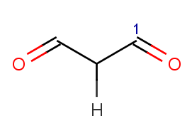 |
charge(ratom(2), "sigma")meaning that the oxygen goes between the carbonyl carbon and its neighbour with the biggest σ charge.
0.0001 will be applied, which practically
means that only the main product is accepted.
match(reactant(0), "[#5,#7,#8,#14,#15,#16][H]") || match(reactant(0), "[n,s]") || match(reactant(0), "[#6]S[#6,#16]") || match(reactant(0), "[#6]S([#6])=[N,O]") || match(reactant(0), "[H]C=O")We exclude reagents containing
BH, NH, OH, SiH, PH, SH
groups or aromatic N, S or sulfide, disulfide, sulfoxyde
or sulfimide groups and we also exclude aldehydes producing
carboxylic acids with these reagents.Refer to the Chemical Terms Reference Tables for ChemAxon's Chemical Terms function / plugin calculation syntax summary and explanation.
Our reactant file is ketones.smiles:
| 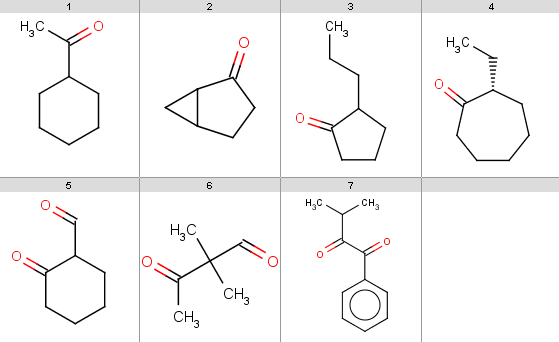 |
Now run Reactor to process the reaction:
react -r Baeyer-Villiger_ketone_oxidation.mrv ketones.smiles -t reaction -o Baeyer-Villiger_results.smiles
The result reactions are stored in Baeyer-Villiger_results.smiles:
| 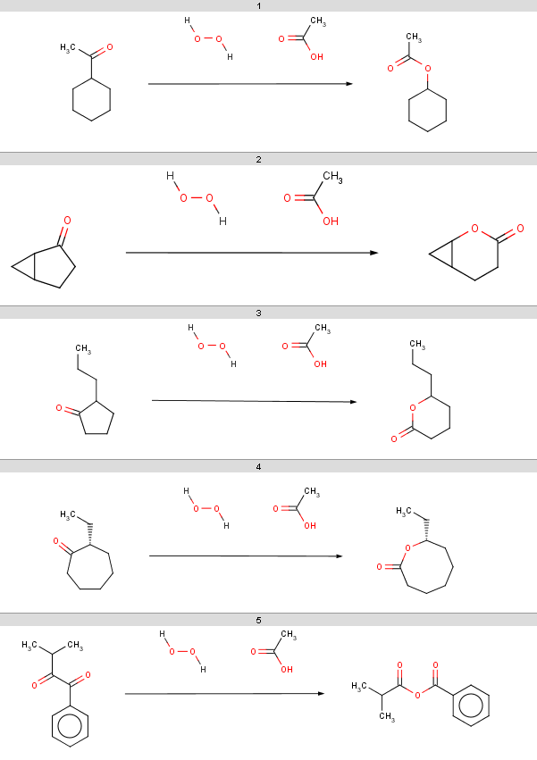 |
Observe, that our 5th ketone does not react because it is a
β-diketone and hence does not satisfy our reactivity criteria.
The 6th ketone is an α-diketone matching
[H]C=O
in our exclude rule, therefore that will
not react either. The specific chemical reason is that these ketones
produce anhydrides instead of oxidation. All other ketones from our
input set react (satisfy our reactivity rule and are not excluded by
our exclude rule), therefore our selectivity rule will determine the
main product. We show the atomic sigma-charges below, look at the
charge values on atoms matching reaction map
2
, marked with
2
in the following sample:
| 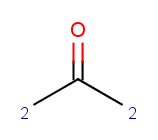 |
Now look at these sigma-charge values and check that the bigger value is selected in our results above:
| 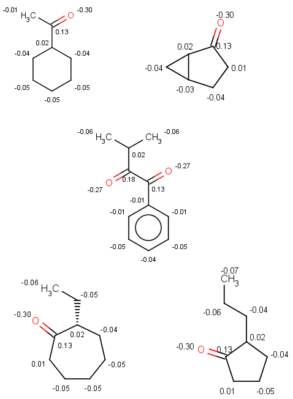 |
You can also run this reaction in the Reactor JSP example. This is in ChemAxon's Reaction Library, you can try to alter or ignore the reaction rules, set different reactants from file or draw your favorite test molecules. You can also save / load the altered reaction. You are more than welcome to post your reaction to the ChemAxon forum.
In this section we show some examples for search filters. These expressions filter targets, queries and/or search hits: the substructure search is performed only for target-query pairs satisfying the filtering condition, furthermore, search hits are filtered by the expression.
Search data (target, query, search hits) is accessed through a search context. Here are some examples for using this context:
target() or mol(): the target
molecule, this is usually omitted since the default input molecule is
the targetquery(): the query moleculem(1): query atom index of query atom with map 1
m(2): query atom index of query atom with map 2
h(0) or hit(0): target atom index
matching query atom with atom index 0 (0-based indexing)
h(3) or hit(3): target atom index
matching query atom with atom index 3 (0-based indexing)
hm(2): target atom index matching query atom
with map 2hm(4): target atom index matching query atom
with map 4In the examples below, the target molecules are stored in targets.smiles:
| 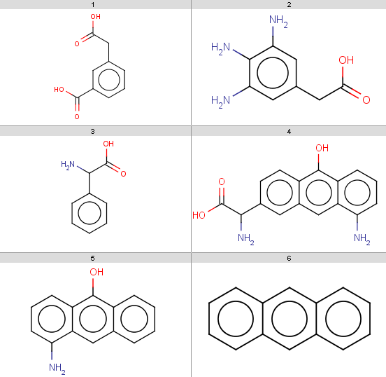 |
Queries are stored in queries.smarts:
| 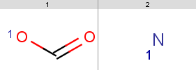 |
In the following examples we use the jcsearch
command line tool to perform substructure search with filtering.
170: jcsearch targets.smiles -q "[#8:1]C=O" -e "mass() > 170" OC(=O)Cc1cccc(c1)C(O)=O Nc1cc(CC(O)=O)cc(N)c1N NC(C(O)=O)c1ccc2c(O)c3cccc(N)c3cc2c1Note, that our 3rd target molecule also contains a carboxylic group but is not present in the output since it has molecular mass
151.16.
You can check molecular masses by: evaluate -e "mass()" targets.smiles 180.16 181.19 151.16 282.29 209.24 178.23
jcsearch targets.smiles -q "[#8:1]C=O" -e "mass() > 170 && ringCount() == 1" OC(=O)Cc1cccc(c1)C(O)=O Nc1cc(CC(O)=O)cc(N)c1N
boolean
condition shown in the basic examples
section above, since here the input molecule will automatically
refer to the target. For example, test the Ghose filter with the
carboxylic group query: jcsearch targets.smiles -q "[#8:1]C=O" -e ghose-filter.txt OC(=O)Cc1cccc(c1)C(O)=OOnly the first target is accepted because only our first
4
targets contain a carboxylic group and only the first of these
satisfied the Ghose filter: evaluate -e ghose-filter.txt targets.smiles 1 0 0 0 1 1
jcsearch targets.smiles -q "[#8:1]C=O" -e "mass(query()) > 20" OC(=O)Cc1cccc(c1)C(O)=O Nc1cc(CC(O)=O)cc(N)c1N NC(C(O)=O)c1ccccc1 NC(C(O)=O)c1ccc2c(O)c3cccc(N)c3cc2c1All target molecules containing carboxylic group(s) are returned, since our query satisfies has molecular mass
44.01: evaluate -e "mass()" "[#8:1]C=O" 44.01However, when running this with our nitrogen query then there is no output, although we have
4 target molecules containing
nitrogen: jcsearch targets.smiles -q "[#7:1]" -e "mass(query()) > 20"because nitrogen has molecular mass
14.01: evaluate -e "mass()" "[#7:1]" 14.01
1 should have
partial charge greater than -0.05. This time we have
empty result set for the carboxylic group but have the 4
search hits for the nitrogen: jcsearch targets.smiles -q "[#8:1]C=O" -e "charge(query(), m(1)) > -0.05" jcsearch targets.smiles -q "[#7:1]" -e "charge(query(), m(1)) > -0.05" Nc1cc(CC(O)=O)cc(N)c1N NC(C(O)=O)c1ccccc1 NC(C(O)=O)c1ccc2c(O)c3cccc(N)c3cc2c1 Nc1cccc2c(O)c3ccccc3cc12since the nitrogen has zero charge while the partial charge on the carboxylic OH is
-0.1. Note, that we refer to the
query molecule as query() and its mapped atom with
atom map 1 as m(1). You can also refer to
query aotms by atom indices but in most cases it is more difficult
to determine. However, since nitorgen has only one atom, you can
safely write: jcsearch targets.smiles -q "[#7]" -e "charge(query(), 0) > -0.1" Nc1cc(CC(O)=O)cc(N)c1N NC(C(O)=O)c1ccccc1 NC(C(O)=O)c1ccc2c(O)c3cccc(N)c3cc2c1 Nc1cccc2c(O)c3ccccc3cc12and you can also omit the atom map in the query.
In these examples we filter search hits by setting conditions on pKa values calculated on target atoms matching carboxylic oxygens or nitrogens. In order that you could check the results easily, we show the pKa values together with atom indices for the target molecules:
| 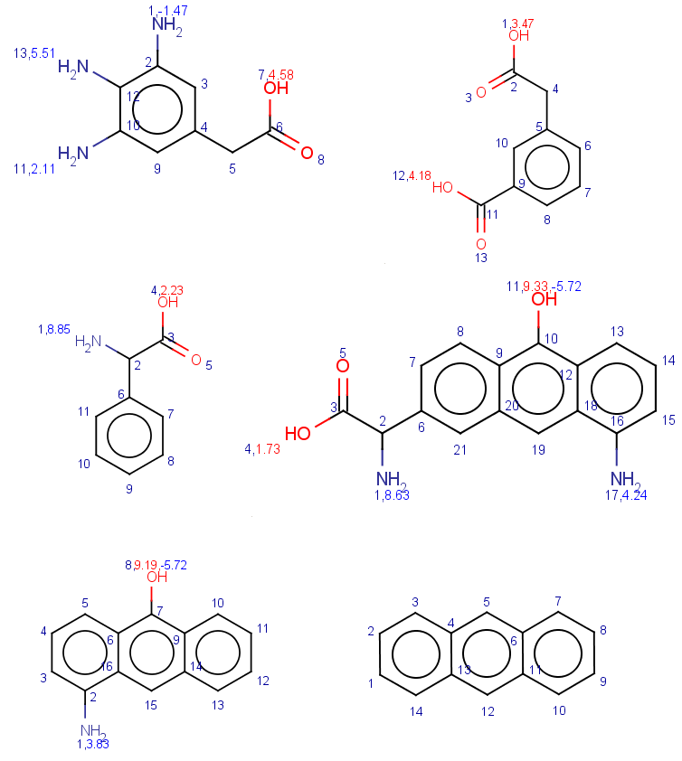 |
jcsearch targets.smiles -q "[#8:1]C=O" --allHits
Query 0 matches:
Match 0:[ 1, 2, 3 ]
Match 1:[ 12, 11, 13 ]
OC(=O)Cc1cccc(c1)C(O)=O
Query 0 matches:
Match 0:[ 7, 6, 8 ]
Nc1cc(CC(O)=O)cc(N)c1N
Query 0 matches:
Match 0:[ 4, 3, 5 ]
NC(C(O)=O)c1ccccc1
Query 0 matches:
Match 0:[ 4, 3, 5 ]
NC(C(O)=O)c1ccc2c(O)c3cccc(N)c3cc2c1
jcsearch targets.smiles -q "[#7:1]" --allHits
Query 0 matches:
Match 0:[ 1 ]
Match 1:[ 11 ]
Match 2:[ 13 ]
Nc1cc(CC(O)=O)cc(N)c1N
Query 0 matches:
Match 0:[ 1 ]
NC(C(O)=O)c1ccccc1
Query 0 matches:
Match 0:[ 1 ]
Match 1:[ 17 ]
NC(C(O)=O)c1ccc2c(O)c3cccc(N)c3cc2c1
Query 0 matches:
Match 0:[ 1 ]
Nc1cccc2c(O)c3ccccc3cc12
1, which
is either the carboxylic OH or the nitrogen depending
on the query. Note, that we refer to this atom as hm(1).
jcsearch targets.smiles -q "[#8:1]C=O" --allHits -e "pka(hm(1)) > 4"
Query 0 matches:
Match 0:[ 12, 11, 13 ]
OC(=O)Cc1cccc(c1)C(O)=O
Query 0 matches:
Match 0:[ 7, 6, 8 ]
Nc1cc(CC(O)=O)cc(N)c1N
jcsearch targets.smiles -q "[#7:1]" --allHits -e "pka(hm(1)) > 4"
Query 0 matches:
Match 0:[ 13 ]
Nc1cc(CC(O)=O)cc(N)c1N
Query 0 matches:
Match 0:[ 1 ]
NC(C(O)=O)c1ccccc1
Query 0 matches:
Match 0:[ 1 ]
NC(C(O)=O)c1ccc2c(O)c3cccc(N)c3cc2c1
Check these results by looking at the pKa
values
.
jcsearch targets.smiles -q "[#8:1]C=O" --allHits -e "mass() > 170 && ringCount() == 1 && pka(hm(1)) > 4"
Query 0 matches:
Match 0:[ 12, 11, 13 ]
OC(=O)Cc1cccc(c1)C(O)=O
Query 0 matches:
Match 0:[ 7, 6, 8 ]
Nc1cc(CC(O)=O)cc(N)c1N
jcsearch targets.smiles -q "[#7:1]" --allHits -e "mass() > 170 && ringCount() == 1 && pka(hm(1)) > 4"
Query 0 matches:
Match 0:[ 13 ]
Nc1cc(CC(O)=O)cc(N)c1N
Note, that while both carboxylic hits are kept because these targets
satisfy both conditions, while two nitrogen hits are filtered out,
becuase one target fails to satisfy the mass condition, and the
other one has 3 rings. Observe, that we put simpler
conditions to the front for efficiency: if the mass condition fails
then the others are not considered at all.
You can try and test filtering conditions at ChemAxon's database search JSP example. Feel free to share your experience at the ChemAxon forum.